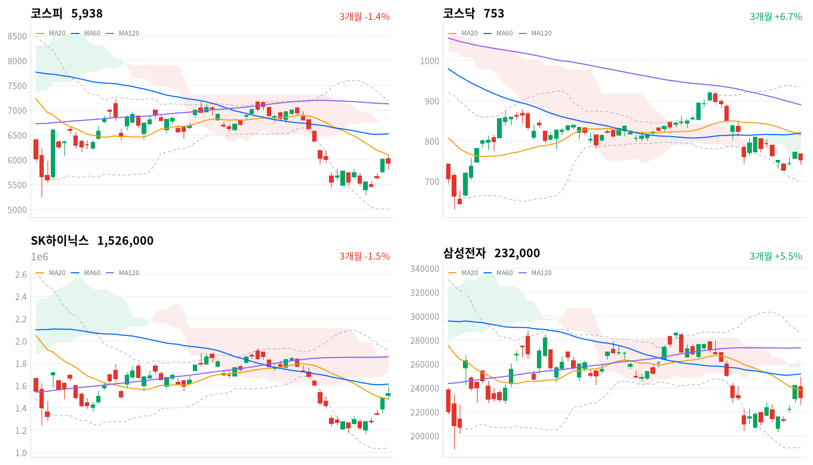

삼성전자가 사상 최대 3분기 확정 실적을 내고도 구체적 추가 환원을 내년 1월 이사회로 미루자 주가가 급락했고, 코스피는 전날 상승분의 일부를 하루 만에 반납했다. 같은 메모리 업황에서 환원 규모를 확정한 SK하이닉스는 올랐다.
확정된 환원이 대형 반도체 두 종목의 주가를 갈랐다고 판단한다. 전날 급등이 외국인 비중 회복으로 이어지는지는 10월 30일 외국인 수급으로 확인한다.
삼성전자는 10월 29일 3분기 영업이익 107조원대의 확정 실적과 함께 3분기 정규 배당을 포함한 약 30조원의 현금배당을 내놓았지만, 남은 환원을 자사주 매입·소각 등 어떤 방식으로 할지는 내년 1월 이사회로 미뤘다. 삼성전자는 4% 넘게 내렸고 SK하이닉스는 2.62% 올랐다. 외국인은 코스피에서 3거래일째 순매수했지만 규모는 전일의 8분의 1에도 못 미쳤고(당일 잠정), 기관이 순매도로 돌아섰다.
장 마감 뒤 보도는 삼성전자 하락을 메모리 호황이 스마트폰 사업의 원가 부담으로 번진 「메모리의 역설」과 주주환원 계획 부족, 두 가지로 설명했다. 메모리 업황이 다시 확인됐다는 데는 동의한다. 다만 메모리 가격 상승을 그대로 누리는 SK하이닉스가 같은 날 올랐으므로, 업황보다 환원의 확정성이 두 종목을 가른 몫이 크다고 본다. SK하이닉스는 전날 2026년 약 100조원이라는 확정 금액을 내놓았고, 삼성전자는 90~110조원의 범위만 제시했다.
삼성전자 하락은 환원 확정성 부족에 대한 할인으로 판단한다. MX 사업부가 메모리 원가 상승으로 영업적자를 낸 것이 삼성전자 고유의 할인 요인일 수 있고, 전날 9.01% 급등한 데 따른 되돌림일 수도 있다. 그러나 사업부 적자는 확정 실적 이전에도 예상할 수 있던 원가 문제이고, 이날 새로 나온 정보는 환원 일정이었다는 점에서 환원 설명을 우선한다. 외국인 순매도 상위가 삼성전자우와 삼성전자였다는 보도가 나왔지만 종목별 외국인 순매매 자료가 없어 그 보도까지가 근거다. 세 설명은 10월 30일 종가에서 삼성전자가 코스피보다 계속 약한지, 1월 이사회 전에 구체적 환원 규모가 먼저 나오는지로 확인한다.
하루 하락만으로 메모리 업황 판단이 바뀌었다고 보지 않으며, 새로 제안할 상품은 없다. 미국 반도체 업종에 옮겨 읽을 것은 양사 이익이 다시 확인한 메모리 수요이고, 삼성전자의 할인은 한국 종목 고유의 환원 문제다. 가장 가까운 결정적 일정은 10월 30일 마감의 외국인 코스피 수급이다. 10월 29일과 30일 합계가 +5,000억원에 닿으려면 30일 하루에 4,054억원 이상 순매수가 나와야 한다.
코스피가 10월 29일 기준 20일 이동평균 6,102 위에서 마감하면, 외국인 매수가 줄어 전날 급등이 이어지지 못했다는 오늘 판단을 철회한다. 오늘 장중 고점이 바로 이 선 아래에서 막혔다.
출처: 문화일보, 뉴스1, SBS Biz, 노컷뉴스
FOMC 동결 결정이 나온 직전 10월 28일 미국 세션은 S&P500이 0.28%, 나스닥이 0.27%, 다우가 0.19% 올라 무난하게 끝났다. 오늘 아시아에서는 닛케이(+1.10%)만 올랐고 대만가권(-1.42%)·상해종합(-0.82%)·항셍(-0.59%)은 내렸다. 코스피는 네 지수 평균(-0.43%)보다 0.81%포인트 약했다.
코스피는 전일 종가와 거의 같은 6,017에서 출발했다. 한국 정규장 동안 S&P 선물은 보합이었고 나스닥 선물은 0.29% 내렸다. 알파벳이 분기 매출 부진으로 미국 시간외 거래에서 급락했다는 보도가 나온 뒤였다.
코스피는 장 초반 6,100까지 올랐다가 오전 중 전일 종가 아래로 돌아섰고, 점심 무렵 5,818까지 밀린 뒤 오후에 일부 되찾아 하루 범위의 아래쪽 절반에서 마감했다. 코스닥은 개장 직후부터 밀려 저점 742를 찍고 753으로 끝났다. 원/달러는 장 초반 고점에서 내려 원화가 강해지는 쪽이었다.
삼성전자가 지수를 끌어내리고 SK하이닉스가 받친 날이다. 외국인은 소폭 샀고 기관이 팔았다. 체코 원전 시공협상 결렬과 LG화학의 LG에너지솔루션 지분 처분이 개별 종목 급락을 만들었다. 오전 하락 전환이 삼성전자 확정 실적 발표 시간대와 겹쳤다는 보도가 나왔지만, 발표 시각은 확인하지 못했다. 시간외 거래 자료는 없어 장 마감 뒤 흐름은 확인하지 못했다.
출처: 머니투데이, 노컷뉴스, 서울경제
코스피는 1.24% 내린 5,938로 하루 만에 6,000선을 내줬고, 코스닥은 2.34% 내린 753.23으로 코스피의 두 배 가까이 내렸다. 대형 반도체가 엇갈리고 중소형주가 더 약했던 하루다.
| 지수 | 종가 | 등락률 | 시가 | 고가 | 저가 | 전일 종가 |
|---|---|---|---|---|---|---|
| 코스피 | 5,937.66 | -1.24% | 6,017.22 | 6,100.11 | 5,817.92 | 6,012.44 |
| 코스닥 | 753.23 | -2.34% | 767.78 | 768.75 | 741.96 | 771.28 |
장중 고점은 20일 이동평균 바로 아래에서 멈췄다. 코스피는 이 선을 넘지 못하고 돌아섰고, 저점에서 일부 되찾았지만 종가는 시가보다 낮았다. 전날 급등 뒤의 반등 시도가 20일선에서 막힌 하루로 판단한다.
| 주체 | 순매수(억원) |
|---|---|
| 개인 | -34 |
| 외국인 | +946 |
| 기관 | -4,274 |
| 주체 | 순매수(억원) |
|---|---|
| 개인 | +2,093 |
| 외국인 | -1,242 |
| 기관 | -740 |
외국인 순매수는 이어졌지만 크게 줄었다. 외국인은 코스피에서 946억원을 순매수했다(전일 7,677억원 순매수, 당일 잠정). 기관은 4,274억원을 순매도해(전일 9,131억원 순매수) 방향을 바꿨고, 개인은 34억원 순매도(전일 1조7,037억원 순매도)로 사실상 균형이었다. 투자자별로는 기관 매도가 지수 하락과 함께 나왔다.
전일 값은 오늘 다시 받은 잠정치라 어제 글의 외국인 7,893억원 순매수와 다르다. 이 기준으로 외국인의 3거래일 순매수는 1조4,449억원이다. 장 마감 뒤 보도는 외국인 순매수를 690억~721억원, 기관 순매도를 4,447억~4,472억원으로 전해, 확정치가 나오면 오늘 값도 달라질 수 있다.
코스닥에서는 외국인이 1,242억원(전일 1,904억원 순매도), 기관이 740억원(전일 2,246억원 순매수)을 순매도했고 개인만 2,093억원을 순매수했다. 코스닥이 코스피보다 크게 내린 날 매수는 개인에게서만 나왔다.
장중 누적 수급과 프로그램 매매는 받을 수 있는 자료가 없어 싣지 않는다.
출처: 머니투데이, 더팩트
| 순위 | 종목/ETF | 구분 | 거래대금 | 비고 |
|---|---|---|---|---|
| 1 | SK하이닉스 | 개별주 | 6.80조원 | - |
| 2 | 삼성전자 | 개별주 | 5.80조원 | - |
| 3 | 반도체 테마 ETF | 테마·롱 | 2.72조원 | 29종 합산 |
| 4 | 삼성전자우 | 개별주 | 1.61조원 | - |
| 5 | 삼성전기 | 개별주 | 1.18조원 | - |
| 6 | SK스퀘어 | 개별주 | 0.84조원 | - |
| 7 | 삼성SDI | 개별주 | 0.60조원 | - |
| 8 | KODEX CD금리액티브(합성) | 단기금리·현금성 | 0.53조원 | - |
| 9 | 두산에너빌리티 | 개별주 | 0.45조원 | - |
| 10 | SK하이닉스 레버리지 | 레버리지·롱 | 0.43조원 | 5종 합산 |
단위 백만원 원본을 조 단위로 환산했다. 같은 기초자산 ETF는 방향별로, 같은 테마 섹터 ETF는 테마별로 묶고 지수·해외 ETF는 제외했다.
거래는 반도체 두 대형주에 몰렸고, 두 종목의 주가는 반대로 움직였다. SK하이닉스(6.80조원)가 1위, 삼성전자(5.80조원)가 2위였고 반도체 테마 ETF 29종 합산(2.72조원)이 3위였다. 삼성전자우(1.61조원)도 4위에 올라 보통주와 우선주가 함께 많이 거래됐다. SK하이닉스 단일종목 레버리지 ETF 5종 합산(0.43조원)이 10위에 들어, SK하이닉스 상승에 거는 레버리지(롱) 상품 거래도 활발했다.
체코 원전 소식이 나온 두산에너빌리티(0.45조원)가 9위로 올라왔고, 현금성 상품인 KODEX CD금리액티브(합성)(0.53조원)는 8위를 지켰다. 거래대금만으로는 이 상품들에 돈이 들어왔는지 빠졌는지 알 수 없다.
하락은 넓었고 금융만 폭넓게 올랐다. 대표 ETF 기준 12개 섹터 가운데 증권(+1.78%)과 은행(+1.74%) 둘만 올랐고, 건설(-4.81%)·2차전지(-4.51%)·조선(-4.47%)이 가장 많이 내렸다. 업종별로는 증권이 39종목 가운데 22종목, 은행이 11종목 가운데 8종목, 손해보험이 12종목 가운데 9종목 올라 일부 종목에 기댄 상승이 아니다. 금융주가 오른 이유를 설명하는 재료는 확인되지 않았다.
반도체와반도체장비 업종은 1.45% 내렸고 173종목 가운데 24종목만 올랐다. SK하이닉스가 오른 날에도 업종 대부분이 내려, 반도체 안의 상승은 SK하이닉스와 지주사에 좁게 머물렀다. 기간을 넓히면 반도체 섹터는 1주 기준 5.41% 올랐지만 1개월 기준으로는 16.22% 낮다.
삼성전자가 사상 최대 실적에도 급락했다(삼성전자 -4.13%, 삼성전자우 -3.26%). 3분기 매출 195조2,532억원, 영업이익 107조4,405억원으로 4분기 연속 분기 최대를 경신했지만, MX 사업부는 범용 D램 등 메모리 가격이 크게 오르면서 영업적자를 냈다. 견조한 메모리 업황은 재확인됐으나 구체적 환원 계획이 없어 투자심리가 위축됐다는 증권가 분석이 나왔다.
SK하이닉스와 지주사는 올랐다(SK하이닉스 +2.62%, SK스퀘어 +3.47%). 전날 발표한 3분기 실적과 2026년 약 100조원 환원의 효과가 2거래일째 이어졌다는 보도가 나왔다. SK스퀘어는 확인된 개별 재료가 없고, SK하이닉스의 최대주주다.
LG에너지솔루션이 급락했다(LG에너지솔루션 -8.6%). 최대주주 LG화학이 보유 지분 2.79%를 약 2조5,000억원에 처분한다고 공시했다. 3분기 매출이 분기 최대인 9조6,434억원이었고 영업이익이 잠정 7,560억원으로 전년 동기보다 25.7% 늘었지만, 모회사의 지분 매각이 매물 부담으로 읽혔다.
두산에너빌리티가 크게 내렸다(두산에너빌리티 -7.65%). 한국수력원자력이 체코 두코바니 원전 시공계약 협상을 대우건설·두산에너빌리티 컨소시엄과 끝내고 재입찰로 돌렸다. 회사는 5조6,400억원 규모의 주기기 공급계약이 협상 종료와 무관하다고 공시했고, 같은 날 낸 3분기 영업이익은 전분기보다 줄었다는 보도가 나왔다.
대우건설이 가장 크게 내렸다(대우건설 -18.57%). 체코 원전 시공계약 협상이 공사비 정산 방식에 대한 이견으로 결렬됐고, 대우건설은 협상 재개를 촉구했다. 현대건설(-4.29%) 등 원전 건설주도 함께 내렸다.
묶음 밖에서는 한화비전(+22.14%)과 광전자(+18.15%)가 크게 오르고 한화솔루션(-11.61%)이 크게 내렸지만, 세 종목 모두 재료는 확인되지 않았다.
출처: 문화일보, 노컷뉴스, 아이뉴스24, 이코노미스트, 서울경제TV, 데일리안, 파이낸셜뉴스, MTN
국고채 금리는 FOMC 동결 뒤 단기와 장기가 함께 내렸다. 3년물은 3.3bp 내린 3.766%, 10년물은 2.7bp 내린 4.081%였고, 회사채 AA- 3년물도 3.2bp 내린 4.449%였다.
| 지표 | 금리 | 전일比(bp) | 기준일 |
|---|---|---|---|
| 국고채 3년 | 3.766% | -3.3 | 2026-10-29 |
| 국고채 10년 | 4.081% | -2.7 | 2026-10-29 |
| CD 91일 | 3.29% | +2.0 | 2026-10-29 |
| 회사채 AA- 3년 | 4.449% | -3.2 | 2026-10-29 |
| 한국은행 기준금리 | 3.00% | 0.0 | 2026-09 |
한국은행 경제통계시스템(ECOS) 기준. 기준금리는 2026년 9월 기준 값이다.
커브 기울기는 거의 그대로였다. 10년물과 3년물의 차이는 31.5bp로 0.6bp 벌어졌고, 위치는 평소 범위의 한가운데쯤이다. 직전 10월 28일 미국 세션의 FOMC 동결을 받은 하루였고, 국고채는 단기물이 조금 더 강했다.
신용 금리차는 국고채 강세에도 줄지 않았다. 회사채 AA- 3년물과 국고채 3년물의 차이는 68.3bp로 0.1bp 넓어졌고, 최근 2년(533거래일) 가운데 넓은 쪽 11% 안에 머물렀다. CD 91일물은 2.0bp 올라 국고채와 반대로 움직였다. 3년물과 기준금리의 차이(76.6bp)도 평소 범위의 한가운데쯤이다.
원/달러는 서울 외환시장에서 전일보다 1원 가까이 내린 1,337원에 주간거래를 마쳤다는 보도가 나왔다. 연준이 예상보다 덜 매파적이라는 평가와 외국인의 달러선물 매도에 장중 1,331원대까지 내렸지만, 증시 약세로 원화 강세가 제한됐다는 설명이다.
출처: 이데일리
| 미국 참조 지수 | 구분 | 관측 | 등락률 | 업종 내 상승 비율 | 기준일 |
|---|---|---|---|---|---|
| 반도체·AI 하드웨어 | 업종 | 반도체와반도체장비 | -1.45% | 14% | 10/29 |
| 반도체·AI 하드웨어 | 종목 | SK하이닉스 | +2.62% | – | 10/29 |
| 반도체·AI 하드웨어 | 종목 | 삼성전자 | -4.13% | – | 10/29 |
| 반도체·AI 하드웨어 | 지수 | 대만가권 | -1.42% | – | 10/29 |
| 전력망 | 종목 | HD현대일렉트릭 | -4.76% | – | 10/29 |
| 전력망 | 종목 | LS ELECTRIC | -3.77% | – | 10/29 |
| 전력망 | 종목 | 효성중공업 | -4.35% | – | 10/29 |
| 방산 | 종목 | 한화에어로스페이스 | -3.43% | – | 10/29 |
| 방산 | 종목 | LIG디펜스앤에어로스페이스 | -4.79% | – | 10/29 |
| 산업재 | 종목 | HD현대중공업 | -4.73% | – | 10/29 |
| 산업재 | 종목 | 한화오션 | -3.81% | – | 10/29 |
| 산업재 | 종목 | 삼성중공업 | -4.78% | – | 10/29 |
| 금속·광업 | 업종 | 철강 | -1.94% | 29% | 10/29 |
| 금속·광업 | 업종 | 비철금속 | -1.08% | 30% | 10/29 |
| 금속·광업 | 종목 | POSCO홀딩스 | -2.30% | – | 10/29 |
| 금융 | 업종 | 은행 | +2.23% | 73% | 10/29 |
| 금융 | 업종 | 증권 | +2.84% | 56% | 10/29 |
| 금융 | 종목 | KB금융 | +1.82% | – | 10/29 |
| 금융 | 종목 | 신한지주 | +0.80% | – | 10/29 |
| 소프트웨어 | 종목 | NAVER | -1.74% | – | 10/29 |
| 에너지 | 종목 | S-Oil | -2.63% | – | 10/29 |
| 에너지 | 종목 | SK이노베이션 | -7.09% | – | 10/29 |
| 일본 | 지수 | 닛케이 | +1.10% | – | 10/29 |
| 중국 | 지수 | 항셍 | -0.59% | – | 10/29 |
| 중국 | 지수 | 상해종합 | -0.82% | – | 10/29 |
원/달러는 한국장 시간대에 장 초반 1,341원(09:00)에서 1,331원(10:30)까지 내린 뒤 15:30에 1,335원 부근에서 마지막으로 관측됐다(공식 종가 아님). 원화가 강해지면 보유한 해외주식의 원화 환산 가치는 줄지만, 대기 자금으로 달러를 새로 사는 비용은 낮아진다. 현금 운용의 참고 금리는 CD가 오르고 국고채 3년물이 내려 엇갈렸다.
반도체는 미국 반도체 업종의 메모리 수요 판단에 근거를 보탰다. 삼성전자 확정 실적이 메모리 가격 상승을 다시 확인했고, 한국 반도체 업종의 하락은 환원 연기라는 국내 종목 재료의 몫이 커 미국 업종으로 옮겨 읽을 근거가 약하다. 전력망은 한국 전력기기주가 함께 내린 날이다. 효성중공업(-4.35%)·HD현대일렉트릭(-4.76%)·LS ELECTRIC(-3.77%)이 체코 원전 결렬과 같은 날 내려, 전력 설비 수요 판단이 바뀐 것인지 차익 실현인지는 이 하루로 구분하기 어렵다.
한국수력원자력이 10월 29일 대우건설·두산에너빌리티 컨소시엄과의 두코바니 원전 시공계약 협상을 끝내고 경쟁 재입찰로 돌렸다는 보도가 나왔다. 사업은 APR1000 2기이고 쟁점은 공사비 정산 방식이었다. 한수원은 총액을 확정하는 방식을, 시공사는 설계 변경으로 늘어난 물량을 따로 정산하는 방식을 원했다. 두산에너빌리티는 원자로설비·터빈발전기 주기기 공급계약이 유지된다며 재입찰에 참가하겠다고 밝혔고, 대우건설은 협상 재개를 촉구했다.
두 회사가 잃는 것은 다르다. 대우건설은 체코 시공 수주와 해외 원전 시공 실적을 함께 잃어 이익 전망이 직접 깎인다. 두산에너빌리티는 주기기 공급 이익이 남아 있고, 깎인 것은 원전 수출을 한 팀으로 따내던 그림에 붙어 있던 기대다. 그래서 두산에너빌리티 하락에는 시공 악재와 주기기 공급을 구분하지 않은 매도가 섞였다고 본다. 같은 날 실적이 전분기보다 줄었고 전력기기주도 함께 내렸다는 점은 다른 설명으로 남는다. 한수원 검토안은 내년 1월 잠재 시공사 사전설명회, 4월 입찰공고, 7월까지 새 시공사 계약이지만 일정은 확정되지 않았다. 새 시공사 선정이 늦어져 주기기 매출 인식까지 밀리는지가 다음 분기점이다.
삼성전자는 2026년 주주환원을 90~110조원 범위로 제시하고 3분기 정규 배당을 포함한 약 30조원(주당 4,601원)의 현금배당을 확정했다. 나머지 60~80조원을 배당·자사주 매입·소각 가운데 어떤 방식으로 돌려줄지는 내년 1월 이사회에서 정한다. 범위로만 남은 금액은 확정 금액보다 할인되기 쉽고, 자사주 매입이 언제 얼마나 들어올지도 아직 알 수 없다. 배당 지급일은 11월 27일이고 1월 이사회 날짜는 확정되지 않았다.
LG화학은 10월 28일 장 마감 뒤 LG에너지솔루션 보통주 653만5,939주를 2년 만기 주가수익스와프(PRS) 방식으로 처분한다고 공시했다. 처분 기간은 11월 27일부터 12월 24일까지이고, 지분율은 79.38%에서 76.59%로 낮아진다. LG화학은 세후 유입액 가운데 약 4,000억원을 주주환원(이 중 3,000억원은 자사주 취득·소각)에, 약 1조6,000억원을 내년 만기 차입금 상환에 쓴다.
자회사에는 들어오는 돈 없이 매물만 남는다. 2030년 목표 지분율 70%까지 약 5조9,000억원어치가 더 남아 있어 추가 매물 우려가 LG에너지솔루션 주가를 눌렀고, PRS 거래 상대방이 위험을 헤지하려고 주식을 팔 여지도 매물 부담에 더해진다. 모회사 LG화학도 이날 0.85% 내려 환원·차입 상환 효과는 주가에 바로 나타나지 않았다. 금융당국이 중복상장 심사를 강화했지만 이미 상장된 모·자회사 사이의 주주 이해충돌은 해소 과제로 남아 있다.
금융당국은 단일종목 레버리지 ETF의 기본예탁금을 3,000만원으로 올리고 괴리율 관리 기준을 강화했지만, 매매 단위를 늘리는 방안은 11월 시행 목표와 달리 시행일을 정하지 못했다. 거래소는 기존 소량 보유분의 처리 방법도 정하지 않았다고 설명했다. 거래 단위가 커지면 개인의 소액 단기 레버리지 매매가 줄어, 삼성전자·SK하이닉스의 하루 등락을 키우던 수요가 약해질 여지가 있다. 세부 지침이 11월에 나온다는 보도가 있으나 날짜는 확정되지 않았다.
미국 연준은 한국 시간 10월 29일 새벽 기준금리를 3.75~4.00%로 동결했고, 위원 2명이 25bp 인상을 주장하며 반대했다. 국고채 금리와 원/달러가 함께 내린 것은 덜 매파적이라는 평가와 같은 방향이었다. 한국은행 기준금리는 3.00%이고 올해 마지막 금통위는 11월 26일이다. 정부는 FOMC 뒤 변동성이 커지면 즉각 대응하겠다고 밝혔다. 다음 FOMC는 12월 8~9일이다.
의무공개매수를 담은 자본시장법 개정안은 10월 28일 대통령의 의견 수렴 발언 뒤 국회 재상정 일정이 나오지 않았다. 가상자산 과세 시행 여부, 상속·증여세 「주가 누르기」 방지책 보완, 자사주 소각을 배당소득 분리과세 요건에 넣는 법안도 이날 새 소식이 없었고 일정은 모두 미확정이다.
출처: 서울경제TV, MTN, 아시아투데이, 데일리안, 뉴스토마토, 파이낸셜뉴스, 뉴스1, SBS Biz, 매일경제, 이코노미스트, 비즈니스포스트, 아이뉴스24, 머니투데이, 뉴시스, 마이데일리
외국인의 2거래일 순매수만으로 한국 반도체 비중 축소가 끝났다고 보지 않은 10월 28일 판단은 유효하다. 철회 기준인 10월 28일 기준 20일 이동평균 6,148 위에서 마감하지 못했고, 코스피는 그 선보다 3% 넘게 낮은 곳에서 끝났다. 기다린 조건 가운데 FOMC는 동결로, 삼성전자 확정 실적은 구체적 환원 연기로 나왔고, 10월 29일 외국인 순매수는 전일보다 크게 줄었다. 10월 30일 수급 하나가 남았다.
SK하이닉스 추가 환원 기대가 이미 가격에 들어갔다는 판단(10월 27일)은 틀렸고, 철회한다. 10월 27일 KRX 종가 대비 10월 29일 KRX 종가 기준 SK하이닉스는 13.80% 올라 코스피(+5.31%)보다 8.49%포인트 강했고, 미리 정한 철회 기준을 크게 넘었다. 발표된 추가 환원은 보도로 거론되던 50~60조원 수준이었지만, 그 금액을 확정했다는 사실이 발표 뒤에도 재평가를 이어 가게 했다. 확정된 환원을 이미 알려진 정보로 본 것이 잘못이었다.
외국인 비중 축소 판단(10월 26일)은 판단을 보류한 채 10월 30일 마감까지 이어 간다. 확인 구간 첫날인 10월 29일 외국인 코스피 순매수는 946억원(당일 잠정)이다. 10월 29일과 30일 두 세션의 외국인 코스피 순매수 합계(당일 잠정)가 0 미만이면 비중 축소 해석을 뒷받침하고, +5,000억원 이상이면 관망 해석을 우선 설명으로 보고 이 판단을 철회하며, 그 사이면 판단을 보류한다.
삼성전자 급등이 환원 기대를 미리 산 것이라는 판단(10월 28일)은 오늘 뒷받침됐다. 10월 28일 KRX 종가 대비 삼성전자는 코스피보다 2.89%포인트 약해, 선반영 해석을 뒷받침하는 쪽에 있다. 판정은 10월 30일 KRX 종가로 한다. 10월 28일 KRX 종가 대비 10월 30일 KRX 종가 기준 삼성전자 수익률이 코스피 수익률보다 2%포인트 넘게 낮으면 환원 기대 선반영 해석을 뒷받침하고, 2%포인트 넘게 높으면 이익 전망 상향으로 보고 이 판단을 철회하며, 차이가 ±2%포인트 안이면 판단을 보류한다.
두산에너빌리티 하락이 체코 시공 악재에 주기기 공급까지 묶어 판 과잉 반응이라는 판단은 오늘 세웠다. 출발점은 10월 29일 KRX 종가 두산에너빌리티 5만6,700원, 코스피 5,938이다. 10월 29일 KRX 종가 대비 11월 5일 KRX 종가 기준 두산에너빌리티 수익률이 코스피 수익률보다 3%포인트 넘게 높으면 과잉 반응 해석을 뒷받침하고, 3%포인트 넘게 낮으면 원전 수출 기대 전반의 재평가나 실적 요인을 우선 설명으로 보고 이 판단을 철회하며, 차이가 ±3%포인트 안이면 판단을 보류한다.
SK하이닉스 1,526,000 ÷ 1,341,000 − 1 = +13.80%. 같은 기간(10월 27일→29일 종가) 코스피 등락률 +5.31%를 빼면 차이는 +8.49%포인트다. 삼성전자 232,000 ÷ 242,000 − 1 = −4.132%. 같은 기간(10월 28일→29일 종가) 코스피 등락률 −1.24%를 빼면 차이는 −2.89%포인트다. 외국인 코스피 순매수(당일 잠정) 기준까지 남은 금액: 5,000 − 946 = 4,054억원. 3거래일 합계: 5,826 + 7,677 + 946 = 14,449억원.
| 시점 | 확인할 것 | 가르는 판단 |
|---|---|---|
| 10월 30일 마감 | 10월 29·30일 외국인 코스피 순매수 합계 | 비중 축소 연장인가, 관망 뒤 매수인가 |
| 10월 30일 종가 | 삼성전자−코스피 수익률 차(10월 28일 대비) | 환원 기대 선반영인가, 이익 전망 상향인가 |
| 11월 5일 종가 | 두산에너빌리티−코스피 수익률 차(10월 29일 대비) | 체코 결렬 과잉 반응인가, 원전 수출 기대 재평가인가 |
| 11월 26일 | 한국은행 금통위 | 기준금리 결정과 국고채 3년물 |
| 11월 27일~12월 24일 | LG화학의 LG에너지솔루션 지분 처분 기간 | 상장 자회사 매물 부담 |
| 내년 1월 | 삼성전자 이사회의 구체적 환원안 | 환원 확정성 할인이 풀리는지 |

코스피·코스닥·SK하이닉스·삼성전자 3개월 일봉에 이동평균(20·60·120)·볼린저밴드·일목균형표 구름대를 겹쳐 그렸다. 상승 캔들은 녹색, 하락 캔들은 적색이다.
| 자산 | 위치(이평·구름) | 가까운 저항 | 가까운 지지 |
|---|---|---|---|
| 코스피 | 세 이동평균·구름 아래(역배열) | 20일선 6,102 → 기준선 6,239 | 전환선 5,703 |
| 코스닥 | 세 이동평균·구름 아래(역배열) | 구름 하단 755 → 전환선 768 | 20일 저점 727 |
| SK하이닉스 | 20일선 위, 구름 아래(역배열) | 기준선 155만원 → 60일선 161만원 | 20일선 148만원 → 전환선 138만원 |
| 삼성전자 | 20일선·구름 아래(역배열) | 20일선 23만8천원 → 기준선 24만5천원 | 전환선 22만6천원 |
코스피는 세 이동평균과 구름 아래 역배열에 있고, 장중 고점이 20일선(6,102) 바로 아래에서 막혔다. 종가로 20일선을 넘으면 기준선(6,239)이 다음 저항이고, 아래로는 전환선(5,703)까지 가까운 지지가 없다. 삼성전자는 하루 만에 20일선 아래로 돌아가 전환선이 가장 가까운 지지다.
위 레벨은 이동평균·볼린저밴드·일목균형표와 스윙 고저를 기계적으로 계산한 값이며 투자 권유가 아니다.
오늘 요약할 뉴스는 FOMC 동결과 환율, 삼성전자 실적과 환원 연기, LG화학의 LG에너지솔루션 지분 처분, 레버리지 ETF 규제, 미래에셋의 일본 증권사 인수, 중국 AI 기업과 중동 유가에 모였다.
밋밋한 FOMC…증권가 "관건은 AI 투자와 중동 유가"머니투데이 · 10월 29일
미국 연준이 10월 FOMC에서 기준금리를 연 3.75~4.00%로 동결했다. 위원 2명은 25bp 인상을 주장하며 반대표를 던졌지만 다수가 동결에 동의해 시장 예상에 부합하는 결과였다. 국내 증권가는 이번 회의가 주식·채권시장에 미치는 파장이 미미하다고 보고 있다. 케빈 워시 연준 의장은 기자회견에서 추가 데이터를 보며 판단하겠다는 입장을 되풀이했고, BoA와 모건스탠리는 이를 두고 명확한 가이던스가 없다며 물가안정 의지에 의구심을 드러냈다. 시장의 관심은 금리보다 빅테크의 AI 자본지출(CAPEX) 방향과 실적으로 옮겨갔다. 오라클은 CAPEX 감소 전환 계획을 밝히며 10.73% 급등했고, 알파벳은 분기 매출 부진으로 시간외에서 9.97% 급락했다. 단기 변수로는 이스라엘 총선 교착에 따른 네타냐후 총리 향방과 중동발 유가 불확실성이 거론된다. 증권가는 연준의 긴축 사이클이 12월 인상을 끝으로 사실상 마무리 국면에 들어섰다고 보고 있다.
10원 넘게 출렁인 환율…FOMC·증시 약세에 1,337원 마감이데일리 · 10월 29일
원·달러 환율은 29일 서울 외환시장에서 전 거래일보다 1원 가까이 내린 1,337원에 주간거래를 마쳤다. 연준이 기준금리를 연 3.75~4.00%로 동결한 뒤 예상보다 덜 매파적이라는 평가가 나오면서 환율은 장중 1,331원까지 밀렸다. 워시 의장이 향후 금리 인상 경로에 구체적 신호를 주지 않은 점이 영향을 줬고, 12월 금리 인상 확률은 90.7%에서 84.8%로 낮아졌다. 외국인의 달러선물 매도도 하락을 거들었다. 다만 코스피가 삼성전자 급락 등으로 6000선을 내주고 코스닥도 2% 넘게 떨어지면서 원화 강세가 제약됐다. iM증권 박상현 연구원은 달러의 추가 강세 가능성이 크지 않아 환율 하락 방향은 유지되며, 향후에는 미국 금리보다 국내 반도체 수급이 더 큰 변수가 될 것이라고 봤다.
반도체 초호황에 매출채권도 유동화… ‘램리서치 고객사’ 텍슨, 1300억원 조달조선비즈 · 10월 29일
서진시스템의 비상장 자회사 텍슨이 매출채권을 기초자산으로 한 1300억원 규모 자산유동화대출(ABL)을 실행했다. KB증권과 신한투자증권이 참여했고, KB증권이 400억원, 신한투자증권이 300억원을 맡았으며 나머지는 공동 주관으로 모집과 셀다운을 진행한다. 만기는 2028년 5월이며 매월 분할 상환한다. 자금은 반도체 장비사업 확장에 쓰인다. 텍슨은 램리서치의 핵심 파트너사로 15년간 장비를 공급해 왔으며, 매출은 2024년 3860억원에서 지난해 4890억원으로 늘었고 영업이익도 284억원에서 326억원으로 증가했다. 거래처의 신용도가 우수하다는 점에서 ABL 조건이 유리하다는 평가가 나온다. 한편 텍슨은 총 1440억원 규모의 전환사채를 발행해 상장 기대감이 있지만, 올해 중복상장 원칙적 금지로 상장 가능성이 불투명해졌다. 서진시스템이 지분 100%를 보유하고 있고 텍슨의 장비 사업이 모회사 실적의 핵심인 만큼 중복상장 심사는 더 엄격해질 전망이다.
'급등락' 레버리지 ETF, 개미 널뛰기⋯변동성 규제 안갯속아이뉴스24 · 10월 29일
삼성전자와 SK하이닉스 단일종목 레버리지 ETF의 가격 변동성이 커지며 개인 매매가 급등락장마다 쏠리고 있다. 29일 한국거래소에 따르면 삼성전자는 전일 대비 4.13% 하락한 23만2000원, SK하이닉스는 2.62% 상승한 152만6000원에 마감했다. 전날 각각 9.01%, 10.89% 급등했던 두 종목은 하루 만에 엇갈렸고, 이에 따라 레버리지 ETF 수익률도 갈렸다. 전날 18.36% 뛰었던 KODEX 삼성전자단일종목레버리지는 7.96% 떨어졌다. 개인은 이달 1~27일 단일종목 레버리지 ETF 14종을 3052억원어치 사들였다가 반등일인 28일에는 954억원을 팔아치웠다. 금융당국은 기본예탁금을 3000만원으로 올리고 괴리율 관리 기준을 2%로 강화했지만, 매매수량 단위를 1좌에서 20좌로 확대하는 방안은 11월 시행 목표와 달리 시행일이 정해지지 않았다. 거래소는 기존 20좌 미만 보유자의 물량을 어떻게 처리할지도 정해지지 않았다고 설명했다.
미래에셋이 품을 日 증권사 어디?…규제 뚫고 NISA 노린다뉴시스 · 10월 29일
미래에셋그룹이 일본 현지 증권사 인수를 추진하며 글로벌 영토 확장에 속도를 내고 있다. 그룹은 29일 이사회에서 일본 증권사 인수 안건을 의결했고, 구체적인 인수 계약 내용은 이후 발표할 예정이다. 피인수 대상의 사명과 인수 규모는 아직 공개되지 않았으나, 시장에서는 대형사가 과점한 일본 시장에서 인허가와 영업 인프라를 갖춘 알짜 중소형 증권사가 유력하다고 보고 있다. 외국계 신규 법인 설립은 인허가 심사가 엄격해 수년이 걸리는 반면, 기존 라이선스를 확보하면 인수 직후 영업을 시작할 수 있다는 점이 M&A를 택한 배경으로 꼽힌다. 올해 상반기 외국인의 일본 주식 순매수액은 11조엔으로 사상 최대를 기록했고, 신NISA 도입 이후 가계 자금까지 증시로 유입되는 흐름도 맞물려 있다. 미래에셋은 인수 증권사의 영업망을 발판 삼아 ETF와 자산관리 서비스를 현지에 공급하고, MAPS 플랫폼을 일본에 안착시킬 계획이다. 다만 공격적 확장에 따른 자금 부담 통제와 현지 현금 창출력 입증이 과제로 남아 있다.
역대급 실적에도 삼전 주가 -4% 이유[이슈]문화일보 · 10월 29일
삼성전자가 3분기 연결 영업이익 107조4405억원, 매출 195조2532억원으로 분기 기준 최대 실적을 4분기 연속 경신했다. 그러나 29일 주가는 4.13% 내린 23만2000원에 마감했다. 시장에서는 반도체 호실적이 스마트폰 사업의 원가 부담으로 이어지는 '메모리의 역설'과 주주 환원 계획 부족이 주가에 부담이 된 것으로 보고 있다. 실제 MX 사업부는 매출이 11% 늘었으나 범용 D램 등 메모리 가격이 20% 이상 오르면서 6000억 원의 영업적자를 냈다. 주주 환원으로는 3분기 정규 배당을 포함해 30조 원(주당 4601원) 규모의 현금 배당안이 나왔지만, 구체적 방식과 규모는 내년 1월 이사회에서 정할 예정이다. 대신증권 이경민 연구원은 견조한 메모리 업황은 재확인됐으나 구체적 환원 계획이 없어 투자심리가 위축됐다고 분석했다. 같은 날 코스피는 1.24% 내린 5937.66, 코스닥은 2.34% 내린 753.23에 마감했다.
ESS 훈풍에도 결국 '잠재적 리스크' 직격탄 맞은 LG에너지솔루션 주가이코노미스트 · 10월 29일
LG에너지솔루션 주가가 29일 8.6% 급락해 35만6000원에 마감했다. 최대주주 LG화학이 보유 지분 2.79%인 보통주 653만5939주를 약 2조5000억원에 처분하기로 이사회에서 결정하고 공시한 데 따른 것이다. 처분 기간은 다음 달 27일부터 12월 24일까지이며, 처분가는 주당 38만2500원으로 산정됐다. 이번 매각으로 LG화학의 지분율은 79.38%에서 76.59%로 낮아진다. LG화학은 약 5년에 걸쳐 지분을 70% 수준까지 낮출 계획을 밝혀 두었는데, 이 계획이 이미 주가의 부담 요인이었다. 반면 LG에너지솔루션의 3분기 영업이익은 잠정 7560억원으로 전년 동기보다 25.7% 늘었고, 분기 최대인 9조6434억원의 매출을 기록했다. 세액공제 4169억원을 제외해도 영업이익은 3391억원이다. 이 밖에 LG화학은 세후 현금 유입액의 약 20%인 4000억원을 주주환원에 배정했으며, 그중 3000억원은 사상 처음으로 자사주 취득 및 소각에 쓰기로 했다.
삼전닉스 여전히 가장 매력적…전력 인프라株도 주목매일경제 · 10월 29일
염승환 LS증권 이사는 29일 '2026 서울머니쇼플러스'에서 금리와 AI를 둘러싼 우려는 일시적 소음이며 강세장은 끝나지 않았다고 주장하며, 근거로 앤트로픽의 연산비용 1달러당 매출이 지난해 1분기 0.4달러에서 올해 2분기 2.08달러로 뛴 점을 들었다. 그는 AI 투자 확대에 따른 최대 수혜국이 한국이며, 빅테크의 데이터센터 투자가 늘수록 자금이 삼성전자와 SK하이닉스로 흘러들 것이라고 전망했다. 1순위 투자처로는 반도체 대형주를 꼽았고, SK하이닉스는 2029년까지 HBM 물량이 사실상 소진된 것으로 봤다. 삼성전자에 대해서는 주주환원 발표 지연이 아쉽지만 주가 하락을 걱정할 수준은 아니라고 말했다. 메모리 증설 수혜주로는 GST, 한양이엔지, 저스템 등 설비 기업과 효성중공업 등 전력 인프라주를 제시했다. 방산과 조선, 화장품 등 소비재 업종도 기회로 봤다. 그는 코스피가 하반기 중 7000에 도달하고 현재는 바닥권이라고 내다봤다.
모회사 주주환원에 자회사 '불똥'… LG엔솔 추가매물 우려매일경제 · 10월 29일
LG화학이 자회사 LG에너지솔루션 보통주 653만5939주를 약 2조5000억원에 처분하기로 공시했다. 처분 기준가격은 전일 종가 주당 38만2500원이며, 다음달 27일부터 12월 24일까지 거래가 이뤄질 예정이다. 지분율은 79.38%에서 76.59%로 낮아지지만 최대주주 지위는 유지된다. 거래는 2년 만기 주가수익스왑(PRS) 방식이다. 이 소식에 LG에너지솔루션 주가는 전 거래일 대비 8.60% 하락한 35만6000원에 마감했다. LG화학은 세후 유입액 중 약 4000억원을 주주환원에 쓰고 나머지 약 1조6000억원은 내년 만기 차입금 상환에 투입할 계획이다. 이 경우 LG화학의 순차입금은 약 28% 줄어 4조원이 될 것으로 추정된다. 다만 자회사에는 직접 유입되는 자금 없이 매물 부담만 남는다. 2030년 목표 지분율 70%까지 남은 물량은 약 5조9000억원 규모다. 금융당국이 중복상장 심사를 강화했지만 이미 상장된 모·자회사 간 주주 이해충돌은 여전히 해소 과제로 남아 있다.
박현주의 영토 개척…日증권사 인수해 리테일 시장 진출매일경제 · 10월 29일
미래에셋증권이 미국 자회사 미래에셋증권 US홀딩스를 통해 일본 오카산증권그룹의 산코증권 지분 100%를 476억원에 인수하는 계약을 29일 체결했다. 이번 인수로 일본 제1종 금융상품거래업 등록을 확보해 이르면 내년부터 개인과 기업을 상대로 리테일 영업에 나설 계획이다. 일본 신NISA 계좌 수는 지난 6월 말 3048만개, 누적 매수액은 85조엔(약 720조원)에 달해 이 시장 공략이 핵심 목표로 제시됐다. 미래에셋은 글로벌X ETF를 산코증권 고객에게 판매하는 방안도 추진한다. 그룹은 2011년 이후 글로벌 M&A 14건, 총 5조5000억원 이상을 집행해 왔으며 중국 자산운용사 인수도 연내 마무리할 방침이다. 다만 해외법인 수익성은 아직 과제로 남아 있다. 올해 2분기 해외법인 세전이익 6091억원 중 80% 이상이 스페이스X 평가이익에서 나왔고, 3분기에는 관련 평가손실이 1조원에 이를 수 있다는 가능성이 제기된다.
매출 19배에도 현금흐름 적자...中 AI 기업, 수익성 시험대머니투데이 · 10월 29일
유니트리는 3분기 매출이 6억6500만위안으로 69.93% 늘었지만 지배주주 귀속 순이익은 1억1300만위안으로 17.37% 줄었다. R&D 투자액이 249.58% 급증한 탓이다. GPU 업체 무어스레드는 3분기 매출이 약 18.7배 늘고 순이익도 흑자로 돌아섰으나, 1~9월 영업활동 현금흐름은 33억900만위안 순유출이었다. 재고자산이 152% 늘어난 데다 생산 확대와 전략적 재고 확보로 구매 지출이 증가한 영향이다. 즈푸AI는 상반기 매출이 9억5400만위안으로 늘어 R&D 부담 비율은 낮아졌지만 조정 순손실은 12.1% 확대됐다. 전문가들은 시장이 매출의 질과 영업현금흐름, R&D 대비 성과를 더 중시할 것으로 봤다. 미국에서도 마이크로소프트는 잉여현금흐름이 예상을 웃돈 반면 알파벳은 90억7000만달러 순유출을 기록해 주가가 엇갈렸다.
중동 수출 회복됐는데…국제유가 왜 110달러 웃돌까?뉴시스 · 10월 29일
국제 유가가 중동 석유 수출 회복에도 배럴당 110달러 선에서 거래되고 있다. 28일(현지 시간) 브렌트유 12월물은 전장 대비 1.26% 오른 115.32달러에 마감해 4월 말 이후 최고 수준을 기록했다. 중동 수출량은 이달 중순 전쟁 이전 수준인 하루 2400만 배럴로 회복됐지만, 미국의 이란 재공습 가능성과 호르무즈 해협 인근 상선 공격 급증으로 해상 안보가 악화하면서 보험료와 운송비가 치솟았다. 골드만삭스는 공급 차질 우려로 브렌트유 가격이 약 27달러 상승했다고 추산했다. 전 세계 즉시 사용 가능한 석유 재고는 2016년 이후 최저 수준으로 줄었다. 반면 JP모건은 브렌트유 적정 가치를 배럴당 94달러로 추정해 현재 가격과 큰 격차가 있다고 평가했다. 중국이 6월 이후 수입을 늘리면서 수요도 회복되는 추세다. 전쟁 장기화 속에서 공급 불안과 재고 감소가 유가를 떠받치고 있어, 향후 중동 정세와 해상 운송 여건이 시장 변동성을 좌우할 전망이다.